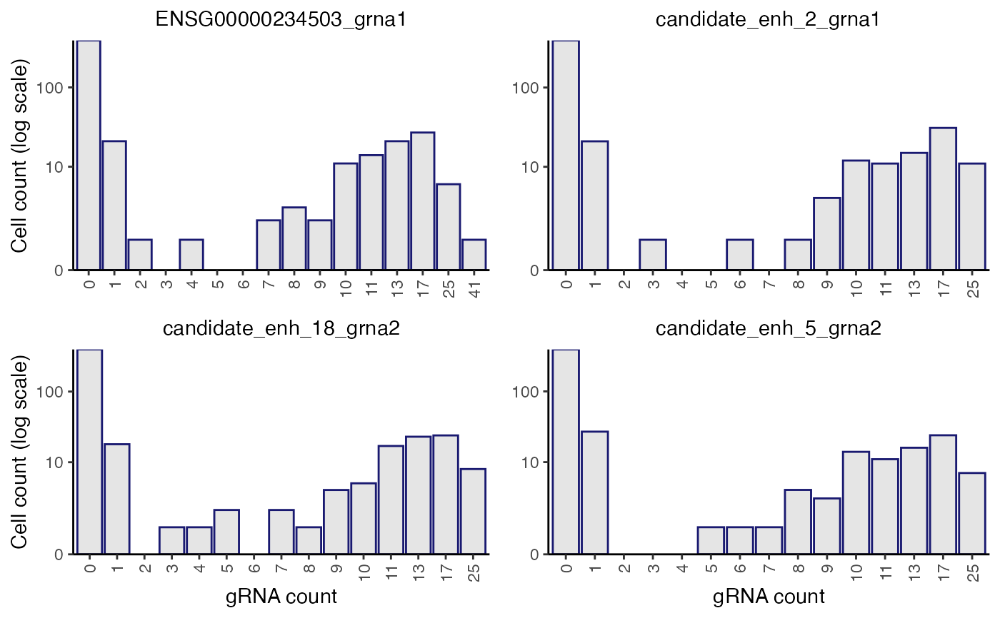

plot_grna_count_distributions() plots the empirical UMI count distribution of one or more gRNAs. plot_grna_count_distributions() can be called on a sceptre_object at any point in the pipeline after import_data().
Usage
plot_grna_count_distributions(
sceptre_object,
n_grnas_to_plot = 4L,
grnas_to_plot = NULL,
threshold = NULL
)Arguments
- sceptre_object
a
sceptre_object- n_grnas_to_plot
(optional; default
4) an integer specifying the number of randomly selected gRNAs to plot- grnas_to_plot
(optional; default
NULL) a character vector giving the names of one or more specific gRNAs to plot. IfNULL, thenn_grnas_to_plotrandom gRNAs are plotted.- threshold
(optional; default
NULL) an integer representing a gRNA count cut-off; if provided, the bins of length 1 will go up to and include this value, after which the exponentially growing bins begin. A vertical line is also drawn at this value. IfNULL, then 10 is the largest gRNA count with its own bin. Non-integer values will be rounded.
Details
The x-axis is a piecewise linear-log scale, with bins of size 1 going from gRNA counts of 0 up to max(10, threshold), and then the bin widths grow exponentially in size. The number under each bar indicates the first value that is counted for that bar, and that bar includes all integers from that label up until the integer immediately preceding the label of the next bar on the right. For example, if one bar has a label of "23" and the next bar on the right has a label of "26" then the bar with the label of "23" counts values of 23, 24, and 25 in the data.
Examples
data(highmoi_example_data)
data(grna_target_data_frame_highmoi)
import_data(
response_matrix = highmoi_example_data$response_matrix,
grna_matrix = highmoi_example_data$grna_matrix,
grna_target_data_frame = grna_target_data_frame_highmoi,
moi = "high",
extra_covariates = highmoi_example_data$extra_covariates,
response_names = highmoi_example_data$gene_names
) |> plot_grna_count_distributions()
